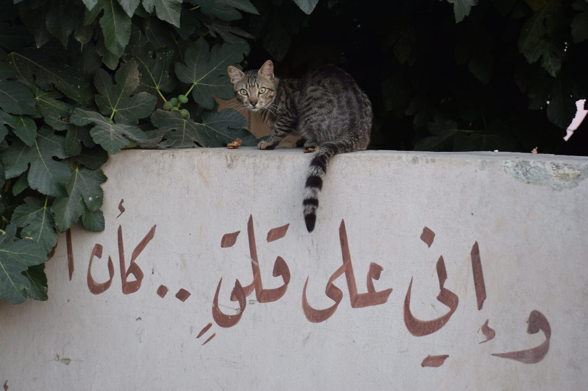
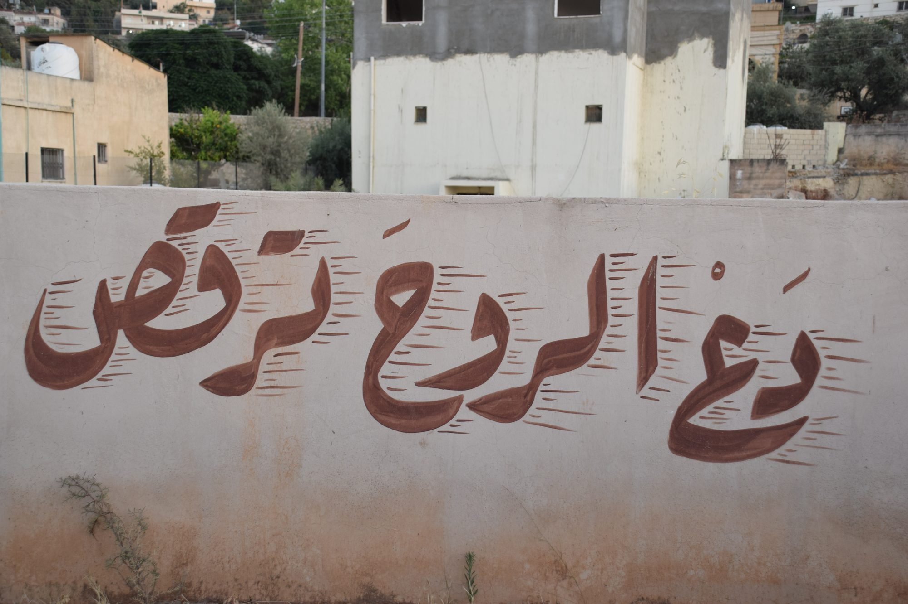
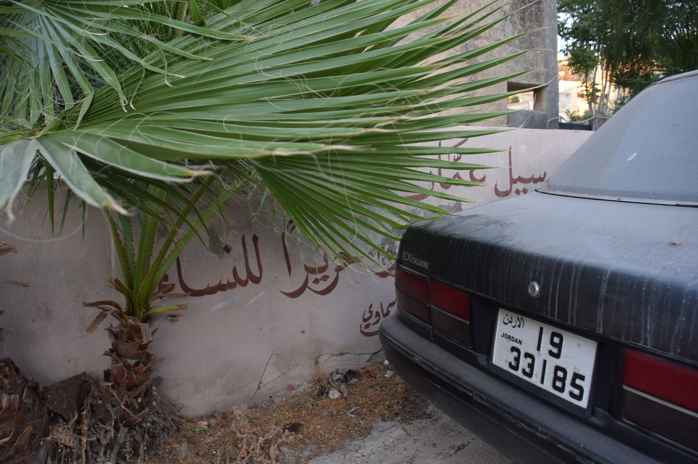

Let the Soul Dance
A story of a street lined with poetry.

A story of a street lined with poetry.

A poem dedicated to Yahya Mahmoud, with a backdrop of Tale of the Three Jewels.

On the view towards sex in Arab society.

On the iconic van bookshop in Amman.

On the lack of AI outrage in the Arab World.

On Amman's Commercial Cultural Shift.

Solitude is Valuable.

Cycling through Holland Park Avenue

To define love is to reduce it.

Noise, Noise, Noise

On the value of useless humanities.

Is that a stupid question?

The Arabs, Kurds and Iraqis alike are damned.

"Organization is no different to spontaneity."


And other existential thoughts.
On the view towards sex in Arab society.
On the iconic van bookshop in Amman.
On the lack of AI outrage in the Arab World.
On Amman's Commercial Cultural Shift.
Solitude is Valuable.
To define love is to reduce it.

Linkedin and the Evil eye.
On the value of useless humanities.
Is that a stupid question?
The Arabs, Kurds and Iraqis alike are damned.
"Organization is no different to spontaneity."

Captain Iraq and Syriaman

Doner Kebab or Shawerma? Kofte or Kofta?

A story of a street lined with poetry.
A poem dedicated to Yahya Mahmoud, with a backdrop of Tale of the Three Jewels.
On the iconic van bookshop in Amman.
Cycling through Holland Park Avenue

Devotion is key.
Noise, Noise, Noise

A story of a street lined with poetry.

The River Thames is full of shit.

What does depression look like to you?